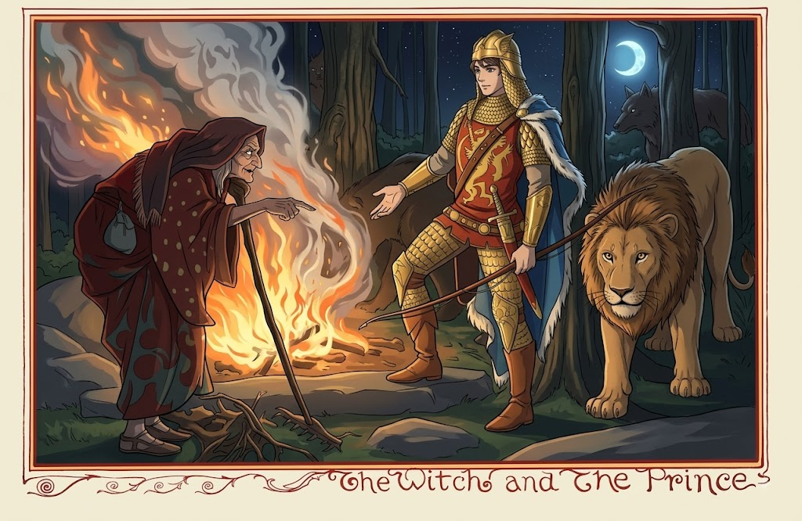

Os Três Príncipes e Seus Animais é um conto popular que acompanha três irmãos que, durante uma caçada, ganham lobos, leoas, raposas e outros animais como companheiros leais. Quando os príncipes seguem caminhos separados, o mais velho enfrenta a traição da própria meia-irmã, um dragão de nove cabeças e uma bruxa capaz de transformar homens em pedra. A lealdade dos animais e o vínculo entre os irmãos são postos à prova em cada reviravolta desta aventura cheia de perigo e mistério.
Os Três Príncipes e Seus Animais
Era uma vez três príncipes que viviam juntos com sua meia-irmã. Um dia, os irmãos foram caçar juntos. Eles caminharam por uma densa floresta onde viram um grande lobo cinza com três filhotes. Quando eles estavam prestes a atirar, o lobo falou: “Não atire em mim, e darei a cada um de vocês um de meus filhotes. Será um amigo leal para você.”
Então os príncipes continuaram seu caminho, cada um com um pequeno lobo os seguindo.
Pouco depois, eles viram uma leoa com três filhotes. Ela também implorou aos príncipes que não a matassem e, em troca, deu a cada príncipe um filhote. A mesma coisa aconteceu com uma raposa, uma lebre, um javali e um urso, até que cada príncipe foi seguido por um bom número de animais jovens.
Ao anoitecer, eles chegaram a um espaço aberto na floresta onde três bétulas cresciam na interseção de três caminhos. O príncipe mais velho pegou uma flecha e atirou no tronco de uma das bétulas.
Voltando-se para seus irmãos, ele disse: “Vamos todos marcar uma dessas árvores antes de seguirmos nossos caminhos separados. Quando um de nós retornar a este lugar, ele deve contornar as árvores dos outros dois e, se vir sangue escorrendo da marca na árvore, ele saberá que aquele irmão está morto”.
Os príncipes fizeram o que o irmão mais velho havia pedido e marcaram as árvores com suas flechas. Então eles seguiram caminhos separados depois de perguntar à meia-irmã com qual irmão ela queria ir.
“Com o mais velho”, ela respondeu, e foi com ele.
O príncipe e sua meia-irmã chegaram a um castelo que havia sido conquistado por um bando de ladrões. O príncipe caminhou até a porta e bateu. Assim que foi aberta, os animais jovens correram e mataram os ladrões. Os homens foram levados para uma caverna, mas um deles não estava morto, apenas fingiu estar.
O príncipe e sua meia-irmã se mudaram para o castelo.
Na manhã seguinte, o príncipe foi caçar. Antes de partir, ele disse à meia-irmã que ela poderia entrar em todos os cômodos da casa, exceto na caverna onde jaziam os ladrões mortos. Mas assim mesmo ela o fez, e quando ela abriu a porta da caverna, o ladrão, que apenas fingiu estar morto, sentou-se e disse-lhe: “Não tenha medo. Faça o que eu digo, e eu serei seu amigo. Se você se casar comigo, será muito mais feliz comigo do que com seu irmão. Quando seu irmão voltar da floresta com seus animais, você deve ir até ele e dizer: ‘Irmão, você é muito forte. Se eu amarrasse seus polegares atrás das costas com um forte cordão de seda, você poderia se soltar? E se ver que ele não pode, me chame.'”
Quando o irmão voltou para casa, a meia-irmã fez o que o ladrão a instruiu a fazer e amarrou os polegares do irmão nas costas. Mas ele se libertou com um puxão e disse a ela: “Irmã, essa corda não é forte o suficiente para mim.”
No dia seguinte, ele voltou para a floresta com seus animais, e o ladrão disse a ela para pegar uma corda ainda mais forte para amarrar seus polegares. Mas novamente ele se libertou, embora não fosse tão fácil quanto da primeira vez.
No terceiro dia, ao retornar da floresta, ele concordou em testar sua força pela última vez. Então, ela pegou uma corda bem forte, que ela havia feito a conselho do ladrão. Desta vez, embora o príncipe puxasse e puxasse com toda a força, ele não conseguiu quebrar a corda. Então, ele a chamou e disse: “Irmã, desta vez a corda é tão forte que não posso quebrá-la. Venha e me solte”.
Mas, em vez de ir, ela chamou o ladrão, que entrou correndo na sala empunhando uma faca, com a intenção de atacar o príncipe.
Mas o príncipe disse: “Antes de morrer, gostaria de tocar minha trompa de caça três vezes: uma vez nesta sala, uma vez na escada e uma vez no pátio.”
O ladrão concordou e o príncipe tocou a buzina. O som alertou os animais jovens e eles correram para ajudar o príncipe. Eles prenderam o ladrão, que não conseguiu escapar, e desta vez ele estava realmente morto.
Então o príncipe virou-se para sua meia-irmã e disse: “Não vou matar você, mas vou deixá-la aqui sozinha.” Ele a acorrentou, colocou uma tigela grande na frente dela e disse: “Não a verei novamente até que você tenha enchido esta tigela com lágrimas de remorso”.
Depois disso, o príncipe deixou o castelo com seus animais e seguiu seu caminho.
Então o príncipe disse: “Por que ela deveria morrer? Eu sou muito forte. Vou salvá-la.”
Ele foi até o local na costa onde o dragão encontraria a princesa. O príncipe logo viu um movimento ao longe na água, e lá veio o dragão de nove cabeças nadando. A jovem raposa chicoteou o rabo na água, fazendo com que a água salgada entrasse nos olhos do dragão. Os outros animais fizeram o mesmo com todos os olhos do dragão, então ele não conseguiu ver nada por um momento. Então o príncipe avançou com sua espada e matou o dragão.
A princesa agradeceu ao príncipe e pediu-lhe que a acompanhasse ao palácio de seu pai. Seu pai, o rei, deu a ele metade de seu reino como recompensa e também permitiu que ele se casasse com a princesa.
Um dia, logo após seu casamento, o príncipe caminhava à noite pela floresta, seguido por seus fiéis animais. Ficou escuro e ele perdeu o caminho que levava ao palácio. Ao longe, ele viu a luz de uma fogueira. Ele caminhou até lá e encontrou uma velha que juntava gravetos e folhas secas e as queimava em uma clareira na floresta.
Como estava muito cansado e a noite estava muito escura, o príncipe decidiu não andar mais. Ele perguntou à velha se poderia passar a noite perto de sua fogueira.

Os Três Principes e seus animais.
“Claro que pode”, respondeu ela. “Mas eu tenho medo de seus animais. Posso tocá-los com minha bengala? Então não terei mais medo deles.”
“Sim, tudo bem”, disse o príncipe. E ela estendeu seu cajado e tocou os animais com ele, e em um instante, eles e o príncipe se transformaram em pedra.
Pouco depois, o irmão mais novo do príncipe chegou à encruzilhada com as três bétulas. Quando ele viu o sangue escorrendo do corte na árvore do príncipe mais velho, ele sabia que seu irmão devia estar morto. Então ele partiu, seguido por seus animais, e chegou à cidade onde seu irmão havia governado e onde morava a princesa com quem se casou. O povo estava todo triste porque seu príncipe havia desaparecido. Até que eles viram o irmão mais novo! Eles pensaram que era seu próprio príncipe e ficaram muito felizes e contaram a ele como o procuraram em todos os lugares. Até o rei pensou que era seu genro. Mas a princesa sabia que não era seu marido e implorou para que ele fosse para a floresta com seus animais e procurasse por seu irmão até encontrá-lo.
Então o príncipe mais novo saiu em busca de seu irmão, e ele também se perdeu na floresta. Anoiteceu e ele também chegou à clareira entre as árvores onde ardia o fogo e onde a velha jogava gravetos e folhas nas chamas. Ele também perguntou a ela se poderia passar a noite perto do fogo, porque era muito tarde e muito escuro para voltar para a cidade.
E ela respondeu: “Você certamente pode. Mas eu tenho medo de seus animais. Posso tocá-los com minha bengala? Então não terei mais medo deles.”
Ele disse que estava tudo bem, porque não sabia que ela era uma bruxa. Então ela estendeu seu cajado e, em um instante, os animais e seu mestre foram transformados em pedra.
Pouco tempo depois, o segundo irmão voltou de suas andanças e chegou à encruzilhada onde cresciam as três bétulas. Quando ele caminhou ao redor das árvores, viu que o sangue escorria dos cortes na casca de duas das árvores.
Então ele também partiu para a cidade onde seu irmão havia governado, e seus fiéis animais o seguiram. Mais uma vez, o povo pensou que era seu próprio príncipe e o levou ao palácio do rei. A princesa viu que ele não era seu marido e também pediu a esse irmão que procurasse seu marido e o trouxesse para casa.
Ele juntou seus animais e foi para a floresta. Lá ele encostou o ouvido no chão para ouvir o som dos animais de seu irmão. Ele pensou ter ouvido algo, mas era tão fraco que não sabia dizer de que direção vinha. Então ele tocou sua trompa de caça e escutou novamente. O som parecia vir da direção de uma fogueira na floresta. Ele foi lá e viu uma velha juntando gravetos e folhas no fogo.
Ele perguntou se poderia passar a noite perto da lareira. Mas ela disse a ele que tinha medo de seus animais e ele teve que deixá-la tocá-los com sua bengala primeiro.
Ele respondeu: “Absolutamente não, ninguém toca em meus animais, exceto eu.” Ele pegou a bengala dela e tocou a raposa com ela e, em um instante, o animal virou pedra. Então ele soube que ela era uma bruxa e disse: “Se você não trouxer imediatamente meus irmãos e seus animais de volta à vida, eu vou transformá-la em pedra com sua própria vara, ou vou soltar meus animais em você.”
A bruxa ficou assustada e pegou um galho de um carvalho jovem, queimou-o até virar cinzas brancas e espalhou as cinzas nas pedras ao seu redor. Imediatamente depois, os dois irmãos e seus animais ficaram ao seu redor.
Então os três príncipes partiram juntos para a cidade. E o rei não sabia quem era seu genro, mas a princesa sabia exatamente quem era seu marido. Houve grande alegria por toda a terra e todos viveram felizes para sempre.
Créditos
Escritor desconhecido é a designação atribuída a contos populares cujas origens se perderam ao longo do tempo, transmitidos oralmente de geração em geração antes de serem registados por escrito. Este conto partilha elementos comuns com as tradições folclóricas europeias, como o motivo das três bétulas que revelam o destino dos irmãos — um detalhe que o distingue dentro do género.